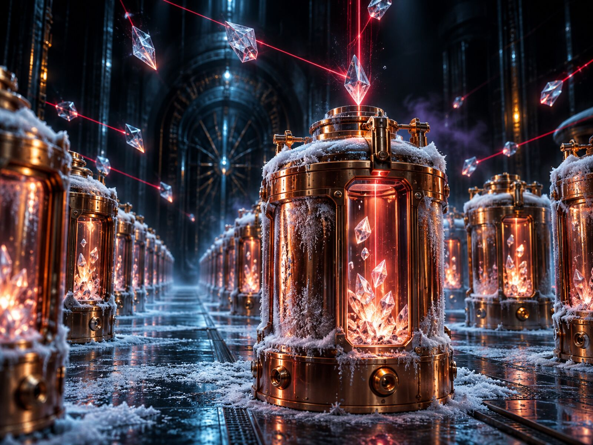
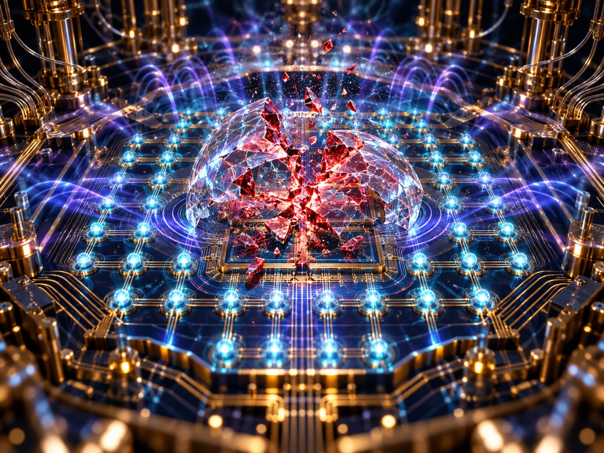
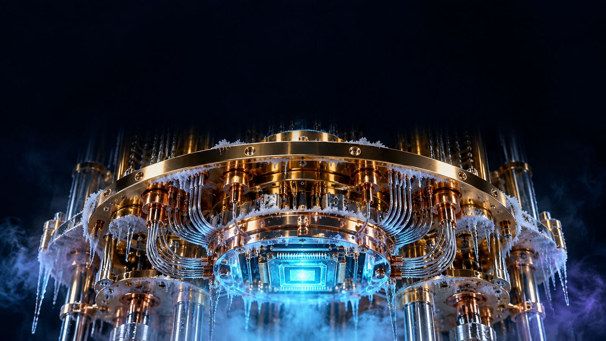
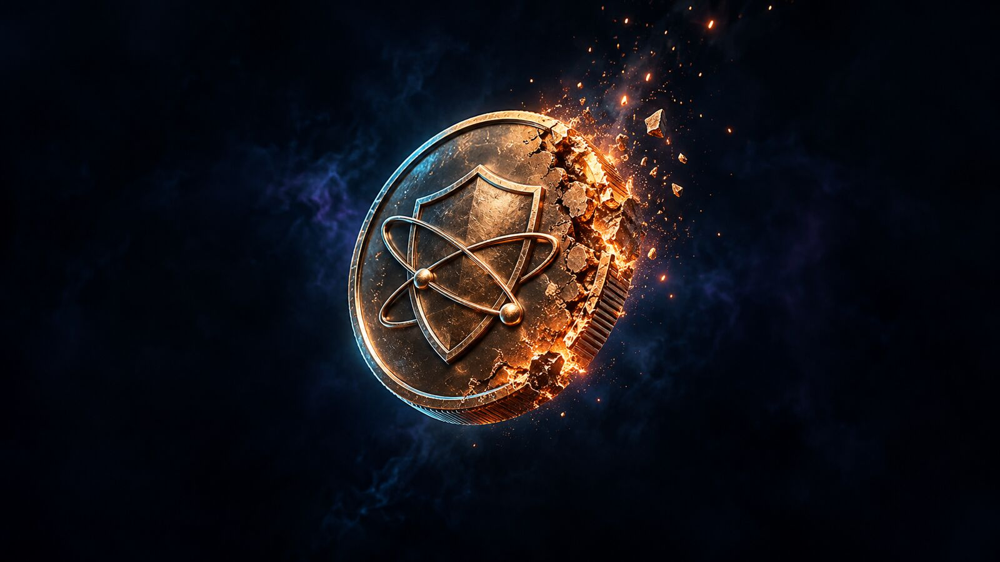

01
You send a transaction.
To sign it, your wallet publishes your public key. Until that moment the chain only knew a hash of it, and a hash cannot be reversed.
tx.sign(privateKey) reveals publicKeyEvery time you send crypto, your public key lands on-chain for good. A large enough quantum computer turns it back into your private key. Find out where your wallet stands.


To sign it, your wallet publishes your public key. Until that moment the chain only knew a hash of it, and a hash cannot be reversed.
tx.sign(privateKey) reveals publicKeyBlockchains never forget. Every key revealed since 2009 sits in plain sight, indexed and searchable by anyone who runs a node.
exposed keys on ledger: all of themNobody has to hack anything today. The data is already public. An attacker only needs to wait for the hardware to arrive.
wait(until: faultTolerantQC)A fault tolerant quantum computer solves the elliptic curve problem behind ECDSA and Ed25519. Public key goes in, private key comes out.
shor(publicKey) returns privateKeyFunds on an address that never signed anything still hide behind a hash. On Solana the address is the public key, so every SOL wallet is exposed by design.
Scan your wallet
Q-Day is the day a quantum computer can break the signatures crypto runs on. Public estimates range from 2029 to 2035. We count down to the earliest one, because that is the one you plan for.
Our score for how close quantum hardware is to breaking crypto signatures. Built from public hardware roadmaps, NIST standards and peer reviewed resource estimates.
How far each network is from letting users move to quantum safe signatures. QSHIELD readiness score, higher is better.

The scanner is free and stays free. $QSHLD unlocks the tools built on top of it, and premium actions burn tokens when you use them.
Deflationary by design. Deep scans, reports and monitoring burn $QSHLD on-chain. No minting, no inflation.
Bitcoin, Ethereum, Solana, Base, Arbitrum and Polygon. Threat index and chain readiness scores.
$QSHLD launch. A bot that watches your wallets and pings you the moment one gets exposed.
Step by step migration guides per wallet, an API for exchanges, and integration with open source quantum resistant vaults.
Disclaimer. QSHIELD is an informational tool. The threat index, chain readiness scores and scanner results are based on public data and our own modeling. They are not financial advice and not a guarantee of security. Quantum computing timelines are projections and can change a lot. $QSHLD is a utility token that gives access to QSHIELD features. It is not a security, does not represent ownership in any entity and carries no expectation of profit. Buying or holding it involves risk, including total loss. Crypto markets are volatile and unregulated in many places. Do your own research. QSHIELD is not liable for any losses.